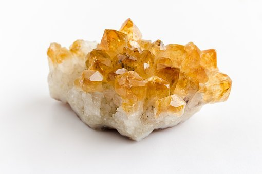

Citrine

Information
Information
Citrine is a yellow stone which os focused on prosperity, joy and energy. Citrine is found in Scotland, Spain, Madagascar, Russia and in the green rainforests of Brazil. Citrine is a pure energy giver because the color reminds of a sunshine and summer. The stone give a bright and sunny mood which is all centered around good vibrations and excitations. It helps you release those feelings of negativity and anger and overcome feelings of confusion, depression and destructive tendencies. Once released from these feelings you will all shine like a star. Citrine can help you to fight all kinds of phobias and to tap into powers of manifestion. With Citrine on your side you feel like anything is possible and powerful.
Health Benefits
Link-TextOutfitInspos
Some outfits inspos who match perfectly with the black green stone